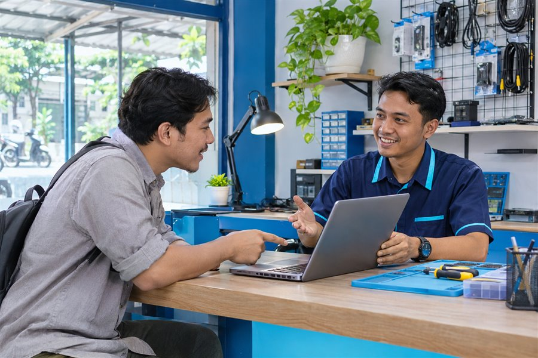

Servis laptop
Laptop lambat, tidak mau menyala, layar bermasalah, atau keyboard yang mulai susah dipakai.

Bengkel laptop & HP di Cileungsi
Keyboard macet, layar pecah, atau HP susah dicas? Ceritakan keluhannya ke teknisi kami.
LAYANAN KAMI
Pilih perangkatmu untuk mulai konsultasi. Biaya dan perkiraan waktu servis kami sampaikan setelah pengecekan.
Laptop lambat, tidak mau menyala, layar bermasalah, atau keyboard yang mulai susah dipakai.

HP susah dicas, baterai cepat habis, layar bermasalah, atau kendala lain saat dipakai.

Ceritakan gejalanya dan sejak kapan muncul. Kami bantu cari langkah pemeriksaan yang sesuai.
KENAL LEBIH DEKAT
Kami membantu memperbaiki laptop dan HP yang kamu pakai sehari-hari.
Kadang masalahnya terlihat sepele, kadang bikin bingung harus mulai dari mana. Ceritakan saja apa yang terjadi. Kami cek penyebabnya, jelaskan pilihan perbaikannya, lalu konfirmasikan biayanya dengan kamu.
Ngobrol dengan kamiTeknisi memeriksa perangkat dan mencari penyebab kendalanya.
Kami menjelaskan hasil pengecekan dan estimasi biaya sebelum kamu menyetujui servis.
Teknisi mengerjakan perbaikan sesuai tindakan yang sudah disepakati.
Ambil perangkatmu dan cek ketentuan garansi servis yang berlaku.
TEMUKAN BITER
| Senin | 09.30–21.30 |
|---|---|
| Selasa | 09.30–21.30 |
| Rabu | 09.30–21.30 |
| Kamis | 09.30–21.30 |
| Jumat | 09.30–21.30 |
| Sabtu | 09.30–21.30 |
| Minggu | 09.30–21.30 |
Konfirmasikan jadwal sebelum berkunjung.
TANYA DULU, BOLEH
Isi nama, jenis perangkat, dan keluhannya. Kami siapkan pesannya supaya kamu tinggal lanjut ke WhatsApp.
Kamu bisa mengecek pesannya sebelum mengirim di WhatsApp.
SEBELUM MENGHUBUNGI
Biaya bergantung pada kerusakan, tindakan, dan sparepart yang diperlukan. Hubungi BITER untuk mendiskusikan pemeriksaan dan estimasinya.
Waktu pengerjaan bergantung pada hasil pemeriksaan dan ketersediaan komponen. Konfirmasikan estimasi langsung kepada BITER.
Siapkan merek/model, kronologi kendala, dan informasi perbaikan sebelumnya. Jika memungkinkan, cadangkan data penting sebelum servis.
Tanyakan ketentuan garansi untuk tindakan atau sparepart yang akan digunakan sebelum menyetujui servis.